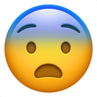
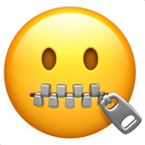
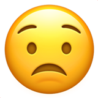

PAGE 1
다이어리 DIARY
[명사]
그날그날 겪은 일이나
생각, 느낌 따위를 적는 종이
다이어리는 실제 생활에 대한 목표를 유지함으로써
하루를 정리하는 데 도움을 줍니다.

두려운 것이 있나요?
자신의 생각을 정리함으로써
자신의 내면과 그 속에 부정적인 것들을 해결해줄 거에요.

자신감이 없나요?
저널링으로 자기 자신의 강점, 야망 등을 찾아내
성장하고 자기 발견의 지름길로 가도록 도와줄 거에요.

자신에게 실망한 적이 있나요?
그 당시 자신의 감정과 생각을 써 자기 표현을 하고
감정을 분출할 수 있는 계기가 될 거에요.
스트레스를 받으시나요?
종이에 부정적인 감정을 표현함으로써
차분해지고 합리적인 결정을 내리는 데 도움을 줄 거에요.